| 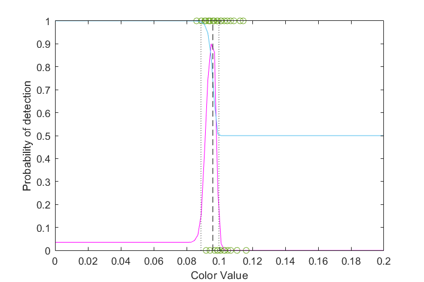
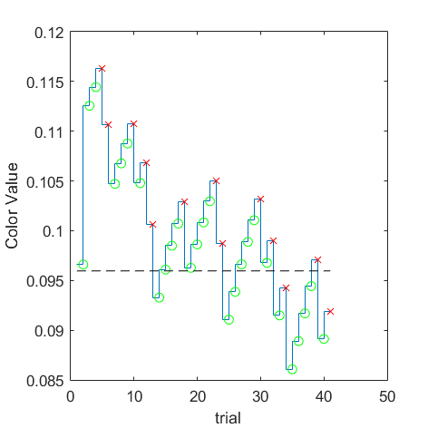
(VRR_Frequency=0.5/Size_Degree=0.5) = 0.0959651 | 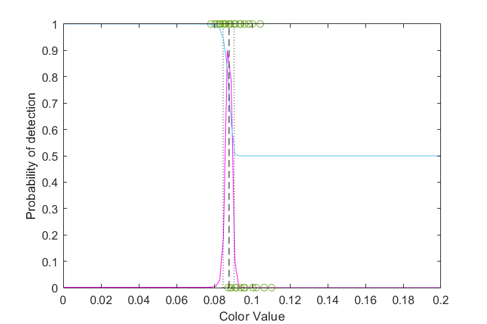
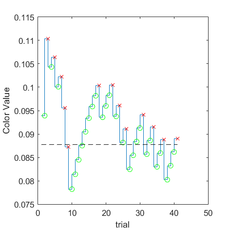
(VRR_Frequency=0.5/Size_Degree=1) = 0.0877564 | 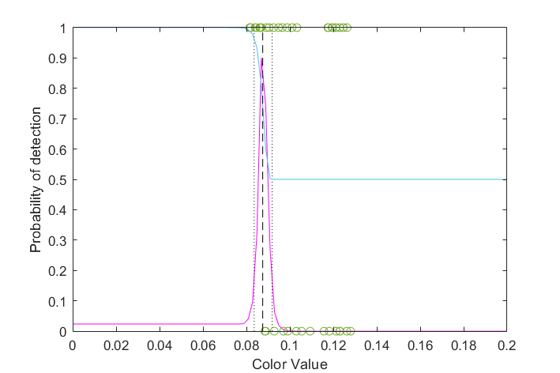
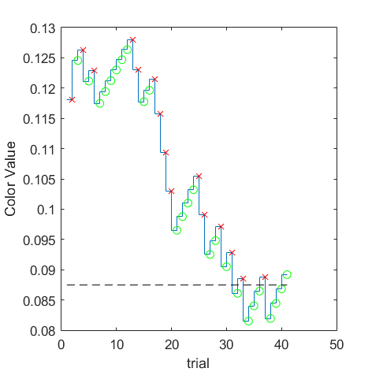
(VRR_Frequency=0.5/Size_Degree=16) = 0.087481 | 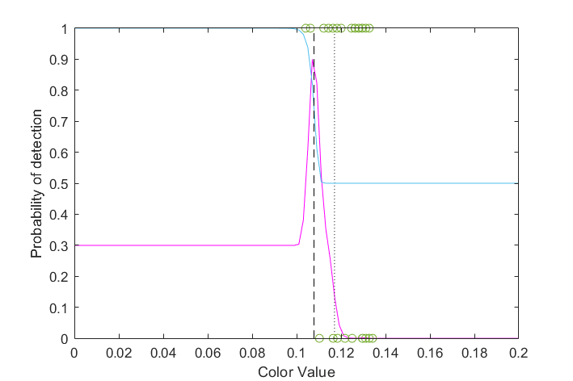
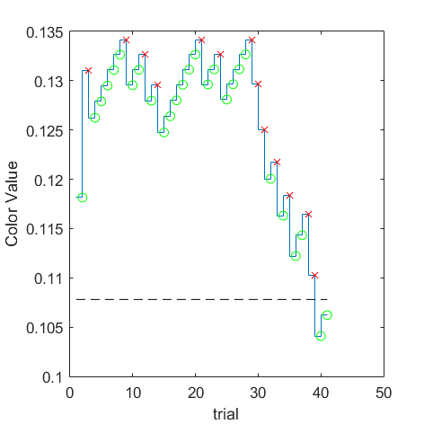
(VRR_Frequency=0.5/Size_Degree=full) = 0.107813 | ||||
| 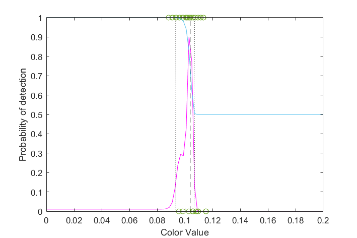
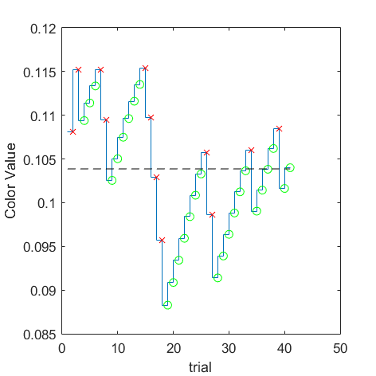
(VRR_Frequency=2/Size_Degree=0.5) = 0.103863 | 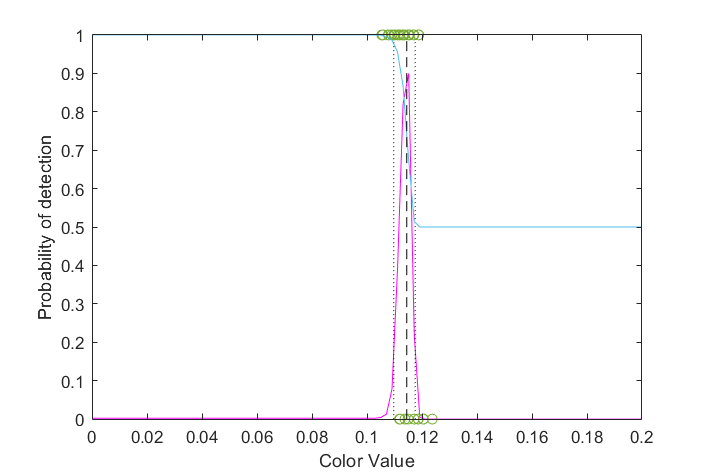
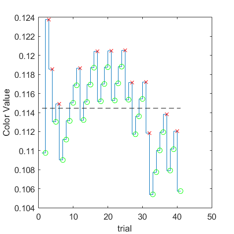
(VRR_Frequency=2/Size_Degree=1) = 0.114459 | 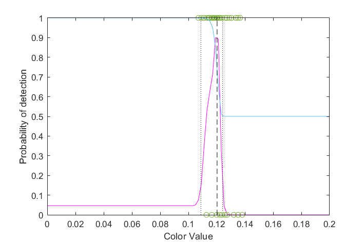
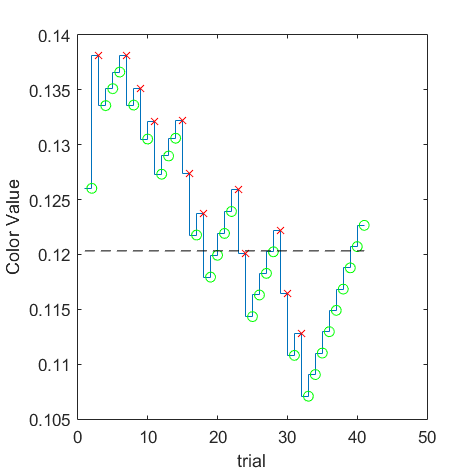
(VRR_Frequency=2/Size_Degree=16) = 0.120325 | 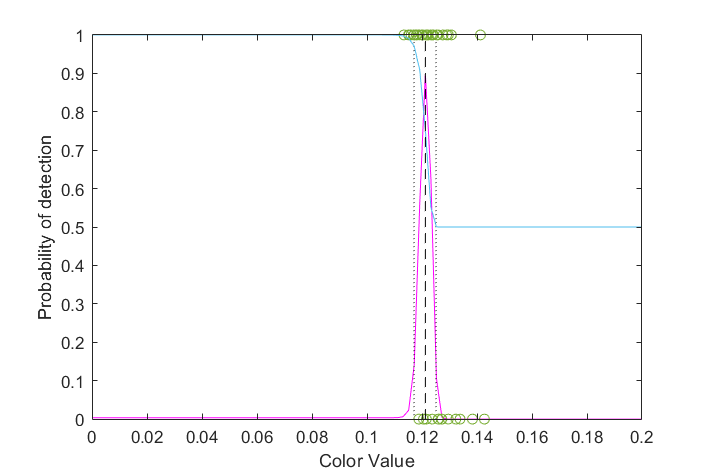
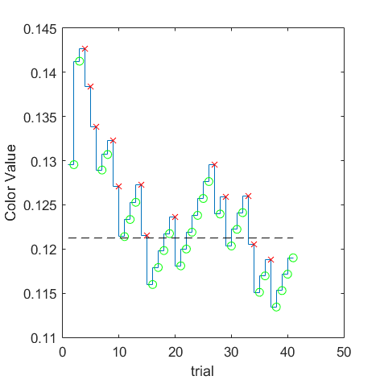
(VRR_Frequency=2/Size_Degree=full) = 0.121245 | ||||
| 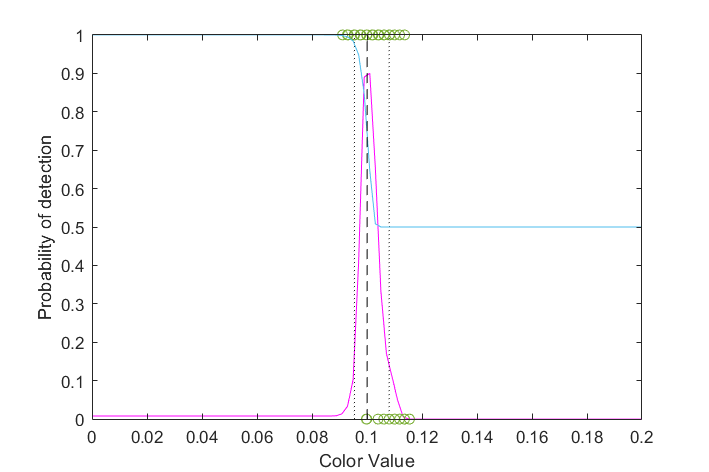
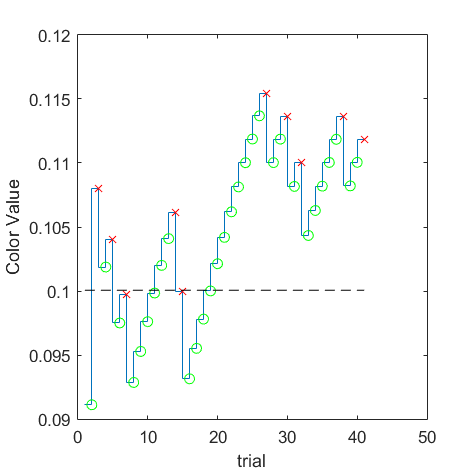
(VRR_Frequency=4/Size_Degree=0.5) = 0.10006 | 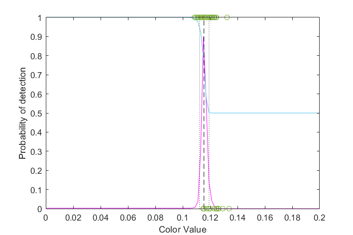
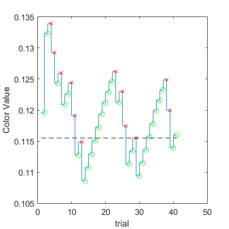
(VRR_Frequency=4/Size_Degree=1) = 0.115516 | 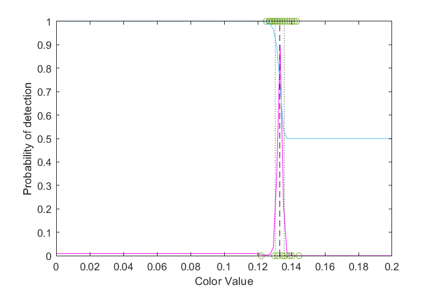
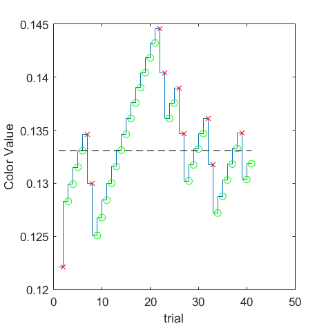
(VRR_Frequency=4/Size_Degree=16) = 0.133094 | 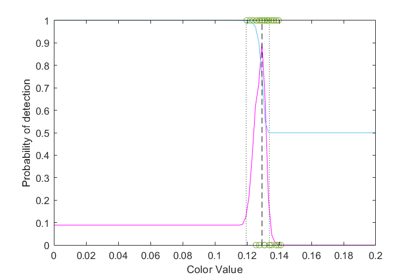
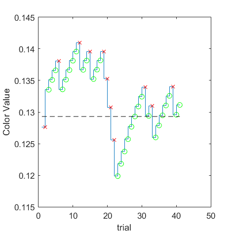
(VRR_Frequency=4/Size_Degree=full) = 0.129302 | ||||
| 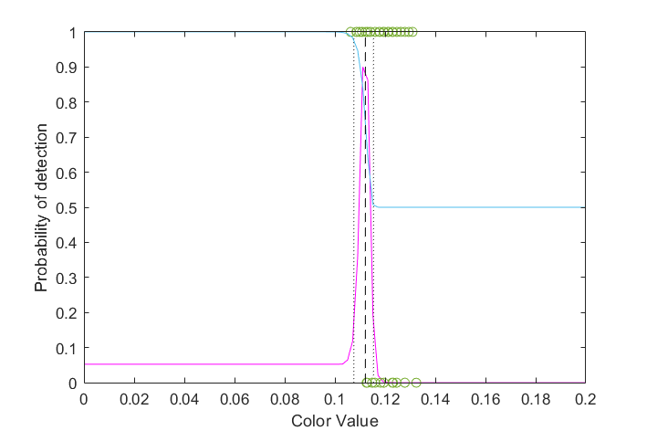
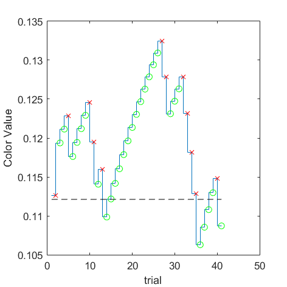
(VRR_Frequency=8/Size_Degree=0.5) = 0.112123 | 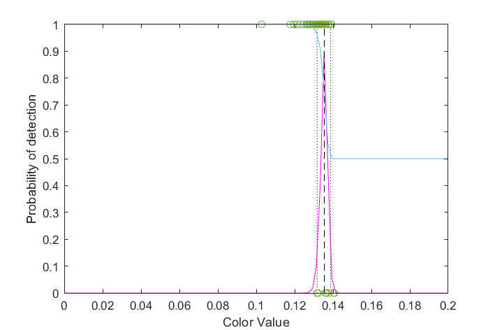
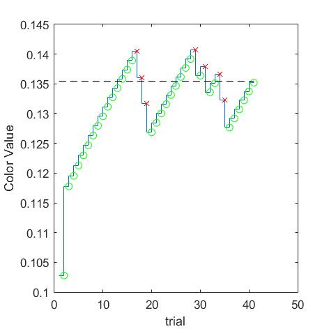
(VRR_Frequency=8/Size_Degree=1) = 0.13544 | 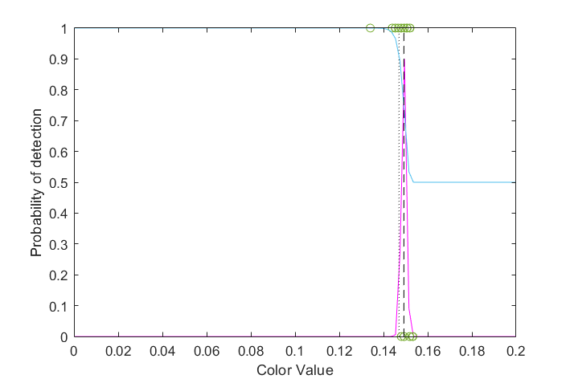
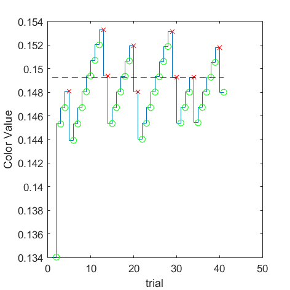
(VRR_Frequency=8/Size_Degree=16) = 0.149249 | 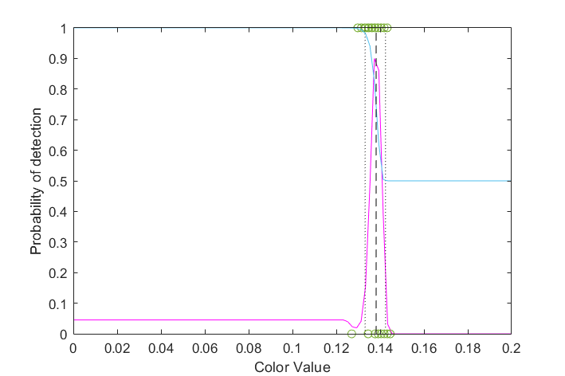
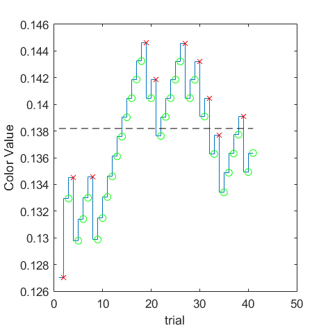
(VRR_Frequency=8/Size_Degree=full) = 0.138193 |